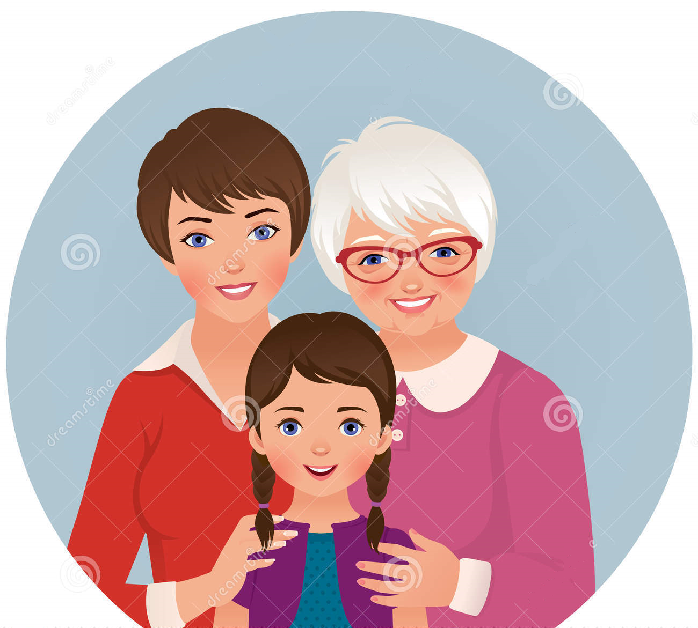

"ANTECEDENTES FAMILIARES DE CÁNCER DE MAMA"
2 / 6

El riesgo de una mujer de tener cáncer de mama es mayor si su madre, una hermana o una hija
(parientes de primer grado) o varios integrantes de la familia por el lado paterno o materno han tenido cáncer de mama.
Tener un pariente de primer grado de sexo masculino con cáncer de mama también aumenta el riesgo para la mujer.